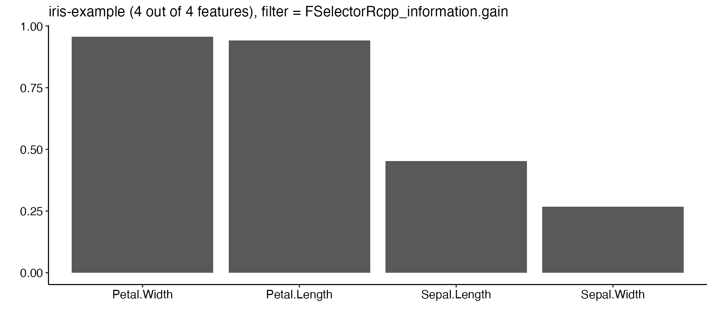

Often, data sets include a large number of features. The technique of extracting a subset of relevant features is called feature selection. Feature selection can enhance the interpretability of the model, speed up the learning process and improve the learner performance. There exist different approaches to identify the relevant features. In the literature two different approaches exist: One is called “Filtering” and the other approach is often referred to as “feature subset selection” or “wrapper methods”.
What is the difference?
- Filter: An external algorithm computes a rank of the variables (e.g. based on the correlation to the response). Then, features are subsetted by a certain criteria, e.g. an absolute number or a percentage of the number of variables. The selected features will then be used to fit a model (with optional hyperparameters selected by tuning). This calculation is usually cheaper than “feature subset selection” in terms of computation time.
- Feature subset selection: Here, no ranking of features is done. Features are selected by a (random) subset of the data. Then, a model is fit and the performance is checked. This is done for a lot of feature combinations in a CV setting and the best combination is reported. This method is very computational intense as a lot of models are fitted. Also, strictly all these models would need to be tuned before the performance is estimated which would require an additional nested level in a CV setting. After all this, the selected subset of features is again fitted (with optional hyperparameters selected by tuning).
mlr supports both filter methods and wrapper methods.
Filter methods
Filter methods assign an importance value to each feature. Based on these values the features can be ranked and a feature subset can be selected. You can see here which algorithms are implemented.
Calculating the feature importance
Different methods for calculating the feature importance are built into mlr’s function generateFilterValuesData(). Currently, classification, regression and survival analysis tasks are supported. A table showing all available methods can be found in article filter methods.
The most basic approach is to use generateFilterValuesData() directly on a Task() with a character string specifying the filter method.
fv = generateFilterValuesData(iris.task, method = "FSelectorRcpp_information.gain") fv ## FilterValues: ## Task: iris-example ## name type filter value ## 1: Petal.Width numeric FSelectorRcpp_information.gain 0.9554360 ## 2: Petal.Length numeric FSelectorRcpp_information.gain 0.9402853 ## 3: Sepal.Length numeric FSelectorRcpp_information.gain 0.4521286 ## 4: Sepal.Width numeric FSelectorRcpp_information.gain 0.2672750
fv is a FilterValues() object and fv$data contains a data.frame that gives the importance values for all features. Optionally, a vector of filter methods can be passed.
fv2 = generateFilterValuesData(iris.task, method = c("FSelectorRcpp_information.gain", "FSelector_chi.squared")) fv2$data ## name type filter value ## 1: Sepal.Length numeric FSelectorRcpp_information.gain 0.4521286 ## 2: Sepal.Width numeric FSelectorRcpp_information.gain 0.2672750 ## 3: Petal.Length numeric FSelectorRcpp_information.gain 0.9402853 ## 4: Petal.Width numeric FSelectorRcpp_information.gain 0.9554360 ## 5: Sepal.Length numeric FSelector_chi.squared 0.6288067 ## 6: Sepal.Width numeric FSelector_chi.squared 0.4922162 ## 7: Petal.Length numeric FSelector_chi.squared 0.9346311 ## 8: Petal.Width numeric FSelector_chi.squared 0.9432359
A bar plot of importance values for the individual features can be obtained using function plotFilterValues().
plotFilterValues(fv2, filter = "FSelectorRcpp_information.gain") + ggpubr::theme_pubr()

By default plotFilterValues() will create facetted subplots if multiple filter methods are passed as input to generateFilterValuesData().
According to the "information.gain" measure, Petal.Width and Petal.Length contain the most information about the target variable Species.
Selecting a feature subset
With mlrs function filterFeatures() you can create a new Task() by leaving out features of lower importance.
There are several ways to select a feature subset based on feature importance values:
- Keep a certain absolute number (
abs) of features with highest importance. - Keep a certain percentage (
perc) of features with highest importance. - Keep all features whose importance exceeds a certain threshold value (
threshold).
Function filterFeatures() supports these three methods as shown in the following example. Moreover, you can either specify the method for calculating the feature importance or you can use previously computed importance values via argument fval.
# Keep the 2 most important features filtered.task = filterFeatures(iris.task, method = "FSelectorRcpp_information.gain", abs = 2) # Keep the 25% most important features filtered.task = filterFeatures(iris.task, fval = fv, perc = 0.25) # Keep all features with importance greater than 0.5 filtered.task = filterFeatures(iris.task, fval = fv, threshold = 0.5) filtered.task ## Supervised task: iris-example ## Type: classif ## Target: Species ## Observations: 150 ## Features: ## numerics factors ordered functionals ## 2 0 0 0 ## Missings: FALSE ## Has weights: FALSE ## Has blocking: FALSE ## Has coordinates: FALSE ## Classes: 3 ## setosa versicolor virginica ## 50 50 50 ## Positive class: NA
Fuse a learner with a filter method
Often feature selection based on a filter method is part of the data preprocessing and in a subsequent step a learning method is applied to the filtered data. In a proper experimental setup you might want to automate the selection of the features so that it can be part of the validation method of your choice. A Learner (makeLearner()) can be fused with a filter method by function makeFilterWrapper(). The resulting Learner (makeLearner()) has the additional class attribute FilterWrapper(). This has the advantage that the filter parameters (fw.method, fw.perc. fw.abs) can now be treated as hyperparameters. They can be tuned in a nested CV setting at the same level as the algorithm hyperparameters. You can think of if as “tuning the dataset”.
Using fixed parameters
In the following example we calculate the 10-fold cross-validated error rate mmce of the k-nearest neighbor classifier (FNN::fnn()) with preceding feature selection on the iris (datasets::iris()) data set. We use information.gain as importance measure with the aim to subset the dataset to the two features with the highest importance. In each resampling iteration feature selection is carried out on the corresponding training data set before fitting the learner.
lrn = makeFilterWrapper(learner = "classif.fnn", fw.method = "FSelectorRcpp_information.gain", fw.abs = 2) rdesc = makeResampleDesc("CV", iters = 10) r = resample(learner = lrn, task = iris.task, resampling = rdesc, show.info = FALSE, models = TRUE) r$aggr ## mmce.test.mean ## 0.05333333
You may want to know which features have been used. Luckily, we have called resample() with the argument models = TRUE, which means that r$models contains a list of models (makeWrappedModel()) fitted in the individual resampling iterations. In order to access the selected feature subsets we can call getFilteredFeatures() on each model.
sfeats = sapply(r$models, getFilteredFeatures) table(sfeats) ## sfeats ## Petal.Length Petal.Width ## 10 10
The result shows that in the ten folds always Petal.Length and Petal.Width have been chosen (remember we wanted to have the best two, i.e. \(10 \times 2\)). The selection of features seems to be very stable for this dataset. The features Sepal.Length and Sepal.Width did not make it into a single fold.
Tuning the size of the feature subset
In the above examples the number/percentage of features to select or the threshold value have been arbitrarily chosen. However, it is usually unclear which subset of features will results in the best performance. To answer this question, we can tune the number of features that are taken (after the ranking of the chosen algorithms was applied) as a subset in each fold. Three tunable parameters exist in mlr, documented in makeFilterWrapper():
- The percentage of features selected (
fw.perc) - The absolute number of features selected (
fw.abs) - The threshold of the filter method (
fw.threshold)
In the following regression example we consider the BostonHousing (mlbench::BostonHousing()) data set. We use a Support Vector Machine and determine the optimal percentage value for feature selection such that the 3-fold cross-validated mean squared error (mse()) of the learner is minimal. Additionally, we tune the hyperparameters of the algorithm at the same time. As search strategy for tuning a random search with five iterations is used.
lrn = makeFilterWrapper(learner = "regr.ksvm", fw.method = "FSelector_chi.squared") ps = makeParamSet(makeNumericParam("fw.perc", lower = 0, upper = 1), makeNumericParam("C", lower = -10, upper = 10, trafo = function(x) 2^x), makeNumericParam("sigma", lower = -10, upper = 10, trafo = function(x) 2^x) ) rdesc = makeResampleDesc("CV", iters = 3) res = tuneParams(lrn, task = bh.task, resampling = rdesc, par.set = ps, control = makeTuneControlRandom(maxit = 5)) ## [Tune] Started tuning learner regr.ksvm.filtered for parameter set: ## Type len Def Constr Req Tunable Trafo ## fw.perc numeric - - 0 to 1 - TRUE - ## C numeric - - -10 to 10 - TRUE Y ## sigma numeric - - -10 to 10 - TRUE Y ## With control class: TuneControlRandom ## Imputation value: Inf ## [Tune-x] 1: fw.perc=0.00461; C=955; sigma=0.273 ## [Tune-y] 1: mse.test.mean=85.5217120; time: 0.0 min ## [Tune-x] 2: fw.perc=0.118; C=168; sigma=1.75 ## [Tune-y] 2: mse.test.mean=34.9702516; time: 0.0 min ## [Tune-x] 3: fw.perc=0.882; C=0.00164; sigma=198 ## [Tune-y] 3: mse.test.mean=86.6100764; time: 0.0 min ## [Tune-x] 4: fw.perc=0.722; C=42.1; sigma=155 ## [Tune-y] 4: mse.test.mean=85.5512510; time: 0.0 min ## [Tune-x] 5: fw.perc=0.501; C=366; sigma=0.0175 ## [Tune-y] 5: mse.test.mean=15.6374544; time: 0.0 min ## [Tune] Result: fw.perc=0.501; C=366; sigma=0.0175 : mse.test.mean=15.6374544 res ## Tune result: ## Op. pars: fw.perc=0.501; C=366; sigma=0.0175 ## mse.test.mean=15.6374544
The performance of all percentage values visited during tuning is:
df = as.data.frame(res$opt.path) df[, -ncol(df)] ## fw.perc C sigma mse.test.mean dob eol error.message ## 1 0.004608974 9.899890 -1.8707510 85.52171 1 NA <NA> ## 2 0.117951637 7.390782 0.8038591 34.97025 2 NA <NA> ## 3 0.881597668 -9.249203 7.6286792 86.61008 3 NA <NA> ## 4 0.722349670 5.396206 7.2718742 85.55125 4 NA <NA> ## 5 0.500742103 8.517280 -5.8385066 15.63745 5 NA <NA>
The optimal percentage and the corresponding performance can be accessed as follows:
res$x ## $fw.perc ## [1] 0.5007421 ## ## $C ## [1] 366.4012 ## ## $sigma ## [1] 0.01747569 res$y ## mse.test.mean ## 15.63745
After tuning we can generate a new wrapped learner with the optimal percentage value for further use (e.g. to predict to new data).
lrn = makeFilterWrapper(learner = "regr.lm", fw.method = "FSelector_chi.squared", fw.perc = res$x$fw.perc, C = res$x$C, sigma = res$x$sigma) mod = train(lrn, bh.task) mod ## Model for learner.id=regr.lm.filtered; learner.class=FilterWrapper ## Trained on: task.id = BostonHousing-example; obs = 506; features = 13 ## Hyperparameters: fw.method=FSelector_ch...,fw.perc=0.501 getFilteredFeatures(mod) ## [1] "crim" "zn" "rm" "dis" "rad" "b" "lstat"
Wrapper methods
Wrapper methods use the performance of a learning algorithm to assess the usefulness of a feature set. In order to select a feature subset a learner is trained repeatedly on different feature subsets and the subset which leads to the best learner performance is chosen.
In order to use the wrapper approach we have to decide:
- How to assess the performance: This involves choosing a performance measure that serves as feature selection criterion and a resampling strategy.
- Which learning method to use.
- How to search the space of possible feature subsets.
The search strategy is defined by functions following the naming convention makeFeatSelControl<search_strategy. The following search strategies are available:
- Exhaustive search
makeFeatSelControlExhaustive(?FeatSelControl()), - Genetic algorithm
makeFeatSelControlGA(?FeatSelControl()), - Random search
makeFeatSelControlRandom(?FeatSelControl()), - Deterministic forward or backward search
makeFeatSelControlSequential(?FeatSelControl()).
Select a feature subset
Feature selection can be conducted with function selectFeatures().
In the following example we perform an exhaustive search on the Wisconsin Prognostic Breast Cancer (TH.data::wpbc()) data set. As learning method we use the Cox proportional hazards model (survival::coxph()). The performance is assessed by the holdout estimate of the concordance index cindex).
# Specify the search strategy ctrl = makeFeatSelControlRandom(maxit = 20L) ctrl ## FeatSel control: FeatSelControlRandom ## Same resampling instance: TRUE ## Imputation value: <worst> ## Max. features: <not used> ## Max. iterations: 20 ## Tune threshold: FALSE ## Further arguments: prob=0.5
ctrl is aFeatSelControl() object that contains information about the search strategy and potential parameter values.
# Resample description rdesc = makeResampleDesc("Holdout") # Select features sfeats = selectFeatures(learner = "surv.coxph", task = wpbc.task, resampling = rdesc, control = ctrl, show.info = FALSE) sfeats ## FeatSel result: ## Features (12): mean_perimeter, mean_area, mean_concavity, mean... ## cindex.test.mean=0.6819127
sfeatsis a FeatSelResult (selectFeatures()) object. The selected features and the corresponding performance can be accessed as follows:
sfeats$x ## [1] "mean_perimeter" "mean_area" "mean_concavity" ## [4] "mean_concavepoints" "mean_symmetry" "mean_fractaldim" ## [7] "SE_texture" "SE_smoothness" "SE_compactness" ## [10] "worst_concavity" "worst_fractaldim" "pnodes" sfeats$y ## cindex.test.mean ## 0.6819127
In a second example we fit a simple linear regression model to the BostonHousing (mlbench::BostonHousing()) data set and use a sequential search to find a feature set that minimizes the mean squared error mse). method = "sfs" indicates that we want to conduct a sequential forward search where features are added to the model until the performance cannot be improved anymore. See the documentation page makeFeatSelControlSequential (?FeatSelControl()) for other available sequential search methods. The search is stopped if the improvement is smaller than alpha = 0.02.
# Specify the search strategy ctrl = makeFeatSelControlSequential(method = "sfs", alpha = 0.02) # Select features rdesc = makeResampleDesc("CV", iters = 10) sfeats = selectFeatures(learner = "regr.lm", task = bh.task, resampling = rdesc, control = ctrl, show.info = FALSE) sfeats ## FeatSel result: ## Features (11): crim, zn, chas, nox, rm, dis, rad, tax, ptratio... ## mse.test.mean=23.3702960
Further information about the sequential feature selection process can be obtained by function analyzeFeatSelResult().
analyzeFeatSelResult(sfeats) ## Features : 11 ## Performance : mse.test.mean=23.3702960 ## crim, zn, chas, nox, rm, dis, rad, tax, ptratio, b, lstat ## ## Path to optimum: ## - Features: 0 Init : Perf = 84.667 Diff: NA * ## - Features: 1 Add : lstat Perf = 38.737 Diff: 45.93 * ## - Features: 2 Add : rm Perf = 31.205 Diff: 7.5323 * ## - Features: 3 Add : ptratio Perf = 27.911 Diff: 3.2939 * ## - Features: 4 Add : dis Perf = 27.028 Diff: 0.88227 * ## - Features: 5 Add : nox Perf = 25.562 Diff: 1.4663 * ## - Features: 6 Add : b Perf = 24.962 Diff: 0.59985 * ## - Features: 7 Add : zn Perf = 24.644 Diff: 0.3182 * ## - Features: 8 Add : chas Perf = 24.334 Diff: 0.3103 * ## - Features: 9 Add : crim Perf = 24.217 Diff: 0.11693 * ## - Features: 10 Add : rad Perf = 23.856 Diff: 0.36066 * ## - Features: 11 Add : tax Perf = 23.37 Diff: 0.48579 * ## ## Stopped, because no improving feature was found.
Fuse a learner with feature selection
A Learner (makeLearner()) can be fused with a feature selection strategy (i.e., a search strategy, a performance measure and a resampling strategy) by function makeFeatSelWrapper(). During training features are selected according to the specified selection scheme. Then, the learner is trained on the selected feature subset.
rdesc = makeResampleDesc("CV", iters = 3) lrn = makeFeatSelWrapper("surv.coxph", resampling = rdesc, control = makeFeatSelControlRandom(maxit = 10), show.info = FALSE) mod = train(lrn, task = wpbc.task) mod ## Model for learner.id=surv.coxph.featsel; learner.class=FeatSelWrapper ## Trained on: task.id = wpbc-example; obs = 194; features = 32 ## Hyperparameters:
The result of the feature selection can be extracted by function getFeatSelResult().
sfeats = getFeatSelResult(mod) sfeats ## FeatSel result: ## Features (16): mean_texture, mean_perimeter, mean_smoothness, ... ## cindex.test.mean=0.5951147
The selected features are:
sfeats$x ## [1] "mean_texture" "mean_perimeter" "mean_smoothness" ## [4] "mean_compactness" "mean_concavepoints" "mean_fractaldim" ## [7] "SE_radius" "SE_area" "SE_smoothness" ## [10] "SE_fractaldim" "worst_texture" "worst_perimeter" ## [13] "worst_smoothness" "worst_concavity" "worst_fractaldim" ## [16] "pnodes"
The 5-fold cross-validated performance of the learner specified above can be computed as follows:
out.rdesc = makeResampleDesc("CV", iters = 5) r = resample(learner = lrn, task = wpbc.task, resampling = out.rdesc, models = TRUE, show.info = FALSE) r$aggr ## cindex.test.mean ## 0.606664
The selected feature sets in the individual resampling iterations can be extracted as follows:
lapply(r$models, getFeatSelResult) ## [[1]] ## FeatSel result: ## Features (16): mean_concavity, mean_symmetry, mean_fractaldim,... ## cindex.test.mean=0.6282322 ## ## [[2]] ## FeatSel result: ## Features (16): mean_radius, mean_texture, mean_perimeter, mean... ## cindex.test.mean=0.5250988 ## ## [[3]] ## FeatSel result: ## Features (15): mean_texture, mean_perimeter, mean_smoothness, ... ## cindex.test.mean=0.7002573 ## ## [[4]] ## FeatSel result: ## Features (15): mean_radius, mean_texture, mean_area, mean_smoo... ## cindex.test.mean=0.6983633 ## ## [[5]] ## FeatSel result: ## Features (18): mean_texture, mean_smoothness, mean_concavity, ... ## cindex.test.mean=0.6896807
Feature importance from trained models
Some algorithms internally compute a feature importance during training. By using getFeatureImportance() it is possible to extract this part from the trained model.
task = makeClassifTask(data = iris, target = "Species") lrn = makeLearner("classif.ranger", importance = c("permutation")) mod = train(lrn, task) getFeatureImportance(mod) ## FeatureImportance: ## Task: iris ## ## Learner: classif.ranger ## Measure: NA ## Contrast: NA ## Aggregation: function (x) x ## Replace: NA ## Number of Monte-Carlo iterations: NA ## Local: FALSE ## # A tibble: 4 x 2 ## variable importance ## <chr> <dbl> ## 1 Sepal.Length 0.0336 ## 2 Sepal.Width 0.00627 ## 3 Petal.Length 0.309 ## 4 Petal.Width 0.294